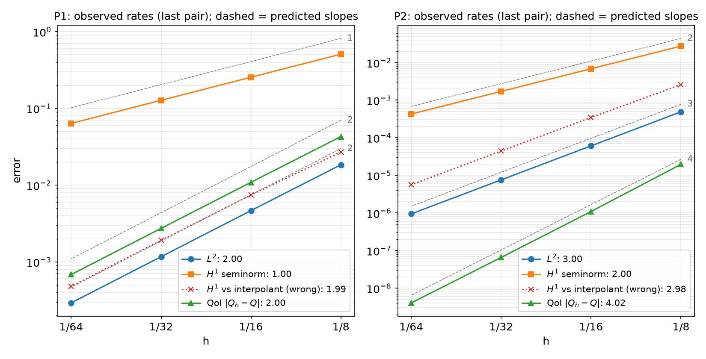
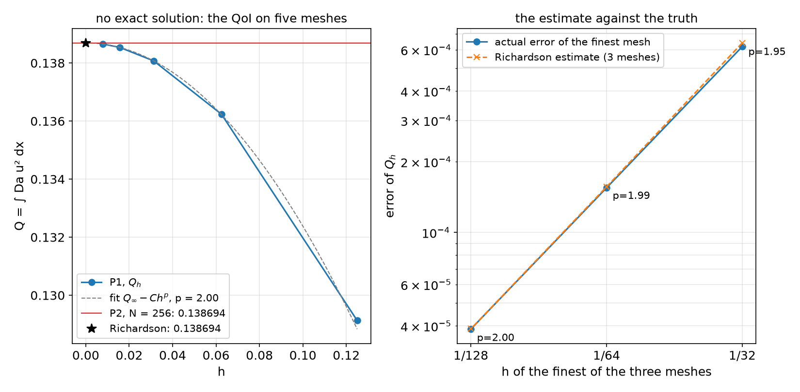

AI-based Materials and Process Simulation II
Week 15 — Project Workshop: Progress Talks, Code Reviews and Verification at Mid-Project
Process Systems Laboratory
Department of Chemical and Biomolecular Engineering, SeoulTech
Today
| Part | Topic | Time |
|---|---|---|
| Quiz on Week 14 (closed-AI) | 10 min | |
| A | The workshop: what happens today, what is graded | 5 min |
| B | The progress talk: four slides in five minutes | 5 min |
| C | Verification at mid-project: predict, measure, extrapolate, compare, budget | 25 min |
| D | The code review · if you are behind | 10 min |
| Progress talks + code reviews — 10 min per student | ≈ 120 min |
Lab: W15_lab.ipynb — a verification kit (projkit.py) and a worked example; work on it and on your project while the others present. No homework this week. Week 16: final presentations; the final report and code follow one week later.
Part A · The workshop
What happens today
| Block | Who | What |
|---|---|---|
| Slides (this deck) | everyone | how the talk and the code review are graded; the verification you need by Week 16 |
| Talk + review, 10 min each, in the announced order | one student at a time | 5 min talk (your slides), then 5 min code review: your project.ipynb open on the screen, two questions |
| Workshop | everyone else | W15_lab.ipynb §1–7 (≈ 45 min), then §8 on your own project; ask questions between talks |
Before the session (by the evening before): upload your slides (PDF or HTML) and your current project.ipynb with outputs (Restart session and run all first).
The term project — where you are
| Part | Weight | When |
|---|---|---|
| Proposal | 5 % | before Week 9 — done |
| Progress talk + code review | 5 % | today |
| Final presentation (with live code questions) | 10 % | Week 16 |
| Final report (Quarto) and code | 20 % | one week after Week 16 |
The progress talk is graded on evidence, not on how far you are. “MMS gives rate 1.0 where I predicted 2, and here is what I checked” scores better than a beautiful result without a convergence plot.
Part B · The progress talk
Four slides in five minutes
| Slide | Content | Time |
|---|---|---|
| 1 · Problem | topic (A–J or own), the model in one line of equations, the QoI, the dimensionless numbers | 1 min |
| 2 · Status | the milestones of your proposal: done / partial / not started, each with its evidence (a cell, a number, a figure) | 1 min |
| 3 · Verification | one convergence plot with predicted slopes (exact or manufactured solution, ≥ 3 meshes) and the state of your topic’s physical check | 1.5 min |
| 4 · Problem and plan | the one thing that blocks you, with its evidence (reason, rate, figure); what you will do — and what you will cut — before Week 16 | 1.5 min |
Optional Quarto template: talk_template/ (this layout). Any tool, PDF or HTML. Five minutes is strict: the code review starts at 5:00.
Part C · Verification at mid-project
C1 · Predict, then measure
A convergence study is a test only if the predicted rate is written down first.
| Quantity | Pp, smooth solution | Why |
|---|---|---|
| \lVert u-u_h\rVert_{L^2} | p+1 | Aubin–Nitsche (duality) |
| \lvert u-u_h\rvert_{H^1} | p | Céa + interpolation |
| a smooth functional Q(u) | 2p | error ≈ (energy error)² — duality again |
| a flux / gradient at a boundary | p | unless computed from the residual (consistent flux, Weeks 1, 11) |
| time stepping, order q | q in \Delta t | refine \Delta t with h fixed fine (or together, \Delta t\propto h^{(p+1)/q}) |
Worked example (lab §2): -\nabla\cdot((1+u^2)\nabla u)+\mathrm{Da}\,u^2=f on the unit square, Newton, manufactured u=e^{x}\sin\pi y+\tfrac12y^2, QoI Q=\int\mathrm{Da}\,u^2\,dx.
C1 · The convergence figure for slide 3

C1 · What the figure says
| Pp | L^2 | H^1 | Q |
|---|---|---|---|
| P1 observed (predicted) | 2.00 (2) | 1.00 (1) | 2.00 (2) |
| P2 observed (predicted) | 3.00 (3) | 2.00 (2) | 4.02 (4) |
- All three rates as predicted, on four meshes (N=8\ldots64), Newton converged (reason 2) on every mesh in six iterations.
- Log–log axes, dashed lines = predicted slopes, observed rates in the legend: the reader checks the claim in one glance.
- The QoI of P2 converges at rate 4: report the rate of the quantity you report, not only of the field.
C2 · The wrong yardstick
The red dotted line in the figure: u_h compared with the interpolant I_hu in the same space — u_ex = fem.Function(V); u_ex.interpolate(...), then the norm of the difference.
| H^1 error at N=64 | P1 | P2 |
|---|---|---|
| \lvert u-u_h\rvert_{1} (exact expression, raised quadrature) | 6.37\times10^{-2}, rate 1.00 | 4.29\times10^{-4}, rate 2.00 |
| \lvert I_hu-u_h\rvert_{1} | 4.79\times10^{-4}, rate 1.99 | 5.66\times10^{-6}, rate 2.98 |
| ratio | 133 | 76 |
- u-u_h=(u-I_hu)+(I_hu-u_h): the interpolation error carries the rate p and is left out; the remainder is superconvergent on structured meshes.
- A rate better than predicted is a failed test too. Measure u-u_h with
ufl.SpatialCoordinateandmetadata={"quadrature_degree": 2p + 6}(or interpolate u into degree \ge p+2).
C3 · No exact solution: Richardson and the GCI
Your production QoI has no exact value. Three meshes h,\,h/2,\,h/4, monotone differences: p_\text{obs}=\frac{\ln\big((Q_1-Q_2)/(Q_2-Q_3)\big)}{\ln 2},\qquad Q_\infty\approx Q_3+\frac{Q_3-Q_2}{2^{p}-1},\qquad \mathrm{GCI}=1.25\,\frac{|Q_3-Q_2|}{(2^{p}-1)|Q_3|}
- The test: p_\text{obs} ≈ the predicted rate. Only then is |Q_3-Q_\infty| an error estimate.
- Differences of opposite sign: not asymptotic (unresolved layer, a point that moves, a loose solver tolerance) — Richardson does not apply; refine, or report the spread.
- p_\text{obs} far below the prediction: pre-asymptotic, a singularity (corner, coefficient jump off mesh lines) — or an error. Find out which.
Example (lab §5): the same equation with f=10, g=0; P1 on N=8\ldots128; an independent check with P2 on N=256.
C3 · The estimate against the truth

C3 · What the figure says
| Meshes | p_\text{obs} | Q_\infty | estimated error | actual error | GCI |
|---|---|---|---|---|---|
| 8–16–32 | 1.950 | 0.1387170 | 6.42\times10^{-4} | 6.19\times10^{-4} | 0.58 % |
| 16–32–64 | 1.987 | 0.1386954 | 1.57\times10^{-4} | 1.55\times10^{-4} | 0.14 % |
| 32–64–128 | 1.997 | 0.1386940 | 3.89\times10^{-5} | 3.88\times10^{-5} | 0.035 % |
- “Actual” = against P2 on N=256 (Q=0.1386939): the estimate is within 4 % of the true error already on the three coarsest meshes, because p_\text{obs}\approx2 as predicted.
- In the report: “Q=0.13866 (P1, N=128), p_\text{obs}=2.00 (predicted 2), GCI 0.035 %; P2 N=256: 0.1386939.”
C4 · -np 1 = -np 2
Run the same cell twice; record(tag, comm, Q=...) writes one JSON file per process count; compare_np(tag) in an ordinary cell.
Q: np1 0.138538849341 np2 0.138538849341 relative difference 1.2e-14 ok
dofs: np1 4225 np2 4225 relative difference 0.0e+00 ok
newton_its: np1 5 np2 5 relative difference 0.0e+00 ok| Different values usually mean | Where it came from in this course |
|---|---|
| random numbers drawn per rank | Week 14, HW13 Q7 (start from a function of the coordinates, noise(x)) |
| a sum or a maximum not reduced over ranks | every week (comm.allreduce) |
| a point value read from a ghost cell | use an owned cell, as line() in Week 14 does |
interior-facet terms with arbitrary '+' sides |
Week 10 (order the sides explicitly) |
Exceptions you must explain: branching 1D meshes (Week 7), Gmsh meshes that differ between machines (Week 2), iteration counts of AMG.
C5 · A run-time budget
The final notebook must run on Colab in at most 30 minutes (Week 16 guide).
| Lab §7 (local, 2 ranks, P2, min of 3; ±10 % between runs) | N=32 | 64 | 128 | 256 |
|---|---|---|---|---|
| unknowns | 4 225 | 16 641 | 66 049 | 263 169 |
| one Newton solve | 0.11 s | 0.32 s | 1.31 s | 5.64 s |
- Fit t\propto n^{p} on the last two points (p=1.06 here) and extrapolate to your final mesh; Colab took 3.5–4 times longer for the same cell (0.42 s → 23.9 s for N=32\ldots256; p=1.05).
- Exclude the first call of a new form: P3 on N=16 took 4.7 s the first time in a fresh runtime, 0.22 s the second (JIT compilation, then cached on disk).
- Too long? The convergence study for one parameter value, the sweep on the mesh it justifies; save results to
/tmp/fnx/*.npzand plot from the file; continue from the previous solution; a reduced cell that reproduces the trend.
Part D · The code review
Five minutes with your notebook on the screen
You are the author of record (syllabus, Academic Integrity): every line, whoever generated it. Two questions, one of each kind:
| Kind | Examples |
|---|---|
| Show where | where the Dirichlet condition enters; where the Jacobian is made; where the reason is printed; where the QoI is reduced over ranks; where the manufactured source is built |
| Predict a change | halve h: what happens to each error? P2 → P1? remove the stabilization? a time step half as large? -np 4? start Newton from zero? |
Prepare: Restart and run all the evening before; one section per verification step; the reason of every solve printed; your AI-usage log up to date — “which part did the LLM write, and which test checked it?” is a fair question.
If you are behind
Cut the scope, never the verification:
| Instead of | Do |
|---|---|
| 3D | 2D, axisymmetric or plane strain — with the reason it is valid |
| two-way coupling | one-way (solve A, then B with A’s field) and estimate the neglected effect |
| transient | the steady state (or a single time-step study) |
| a sweep of 10 parameter values | 3–4 values, on the mesh your convergence study justifies |
| your own geometry first | the verification case first (exact solution), then the geometry |
The topic pages (projects/) list required tasks and stretch goals: finish the required tasks with full verification before any stretch goal.
Summary
| Step | Evidence for the progress talk | Tool (projkit.py) |
|---|---|---|
| Predict, then measure | rates on ≥ 3 meshes against predicted slopes | rate_table, rate_plot |
| The right yardstick | u-u_h with the exact expression and raised quadrature | (your error integral) |
| QoI without an exact value | p_\text{obs}, Q_\infty, GCI | richardson |
| Parallel consistency | same QoI with -np 1 and -np 2 |
record, compare_np |
| Cost | time per solve vs unknowns, Colab factor | budget |
Next week: final presentations (12 min: 8 talk + 4 questions on your code). The final report (Quarto) and code are due one week later — the Week 16 guide gives the sections and the checklist.